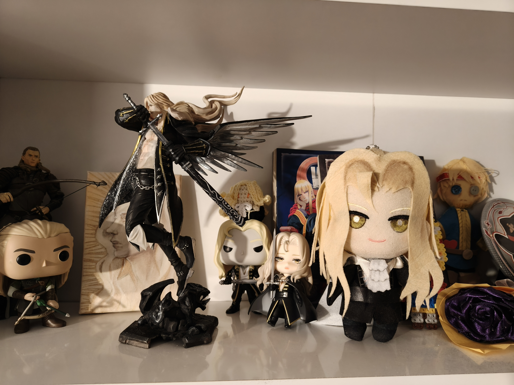

My Hobbies - Introduction
As I have mentioned in the main page, I have many hobbies, mainly based on art.
I will be mentioning them in detail here now. They are not made up by the way, I do enjoy the things listed here.
Visual Arts
⚝ 2D Digital Art
I have been doing 2D digital art since I was 12 years old. I am actually a freelancer artist and have earned money by doing artwork for a while.
I mostly specialize in character design, but I also do stuff like pixel art/animations, concept illustrations, fan art.
I sometimes sell merchandise, that I drew, in conventions.
Here is a small portfolio of my artwork: Portfolio
⚝Handcrafting
This is usually for my cosplay hobby. I sometimes create/3D print props to complete or better my cosplays.
Other than that, I handcraft merch of my favorite characters or sew clothing in order to upcycle them, still new to sewing though.
I once handcrafted a whole costume of a character I really liked. Here's a photo of it: Boothill Costume
⚝Painting
I sometimes paint canvases or props I 3D print from my printer. I not only do digital art but traditional art too.
⚝Figure Painting
I included this as something else from painting in general because it is more difficult to do and quite different in a sense.
I basically like painting 3D printed figures too, I have painted figures with faces smaller than my thumbnail, It is a tedious task but the outcome is worth it.
An example is included in collecting section.
Performance Based Hobbies
⚝Cosplaying
I have been cosplaying since 2021 now. I do it as a hobby for now, but I hope I can get promotion offers in the future to cos-model for events.
I am therefore trying to grow my account on instagram, to see if it evolves into something more professional.
However I like to joke and randomly post content so not sure about the professional aspect.
⚝Singing
I have been singing since I was a little child. I enjoy it a lot and go to karaoke often. I used to perform on stages for school shows during middle and high school.
I once joined a competition held by Fizy for highschool students BUT I wasn't the vocal there, I was playing the synthesizer.
YES, I do know how to play the piano/synth too but I don't enjoy it as much.
⚝Dancing
I partook in last year's hip-hop show team, in Yaşar Uni. I will be partaking in this year's show team too, hopefully. It hasn't started yet.
I am not a professional at all but I do enjoy it and as a person with no dancing background from earlier, the fact that I went on the stage a few times last year is nice.
Other Hobbies
⚝Collecting
As soon as I started earning my own income, half of it /if not, more/ went into buying collectible items.
I mainly collect merchandise of my favorite characters. These include: Figures, keychains, artwork, plushies etc.
I do collect other stuff such as: Dolls, books, make-up, perfumes, cosplays. I might be an overspender...
Here is a picture of my Alucard merch collection.
I painted the big figure myself, upcycled the plushie myself, painted the small canvas myself. The rest are collected.

⚝Reading
This one is self-explanatory. I enjoy reading fiction, romance, horror/thriller.
My favorites are Howl's Moving Castle, The Great Gatsby, Pet Cemetery, Mobius, Carmilla.
I have bought the LOTR books, including earlier stuff like The Book of Lost Tales, I am sure I will dig them too.
⚝Anime/Series/Gaming/Lore Learning
Again, a direct result of my invesment in a good story. No matter the medium. I especially love story-based games though.
⚝Languages
This sort of started with my excitement for Duolingo. I started learning Danish besides my practices for German.
It has been 2 years since then and I seriously understand Danish words, sentences.
I have also tried French just a little. Hoping to move on with Finnish or Irish.
I also have some understaning of Japanese due to my interest in Anime, I can sort of read Hiragana/Katakana and some Kanji symbols.